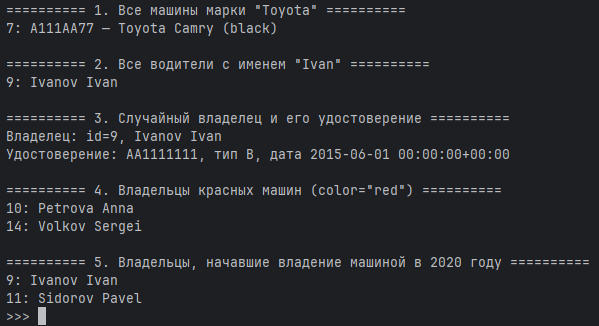
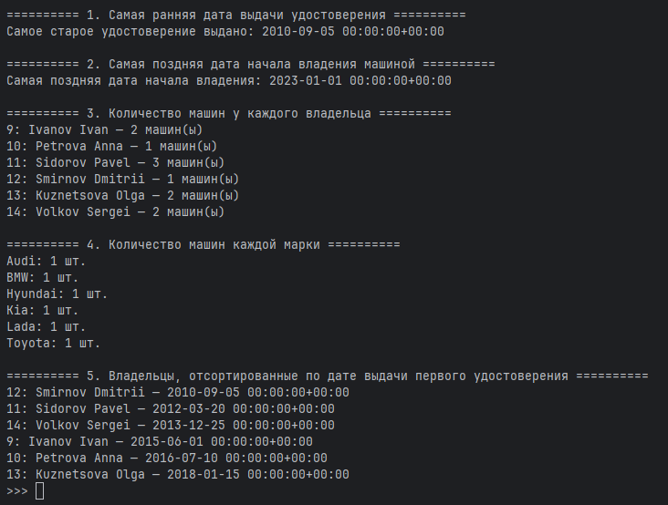

Практическая работа 3.1. Django Web framework. Запросы и их выполнение.
Цель работы
- Создать и заполнить базу данных о автовладельцах, автомобилях, водительских удостоверениях и фактах владения.
- Научиться выполнять выборку и фильтрацию данных с помощью Django ORM.
- Освоить агрегирующие запросы (
Min,Max,Count) и аннотирование (annotate).
Модели данных
Использовались следующие модели (файл owners/models.py):
class CarOwner(models.Model):
last_name = models.CharField(max_length=30)
first_name = models.CharField(max_length=30)
date_of_birth = models.DateTimeField(null=True, blank=True)
cars = models.ManyToManyField(
'Car',
through='Ownership',
related_name='owners' # <-- по машине получаем всех владельцев
)
class DriverLicense(models.Model):
owner = models.ForeignKey(
CarOwner,
on_delete=models.CASCADE,
related_name='licenses' # <-- по владельцу: owner.licenses.all()
)
license_number = models.CharField(max_length=10)
license_type = models.CharField(max_length=10)
issue_date = models.DateTimeField()
class Car(models.Model):
state_number = models.CharField(max_length=15)
brand = models.CharField(max_length=20)
model = models.CharField(max_length=20)
color = models.CharField(max_length=30, null=True, blank=True)
class Ownership(models.Model):
owner = models.ForeignKey(
CarOwner,
on_delete=models.CASCADE,
related_name='ownerships' # owner.ownerships.all()
)
car = models.ForeignKey(
Car,
on_delete=models.CASCADE,
related_name='ownerships' # car.ownerships.all()
)
start_date = models.DateTimeField()
end_date = models.DateTimeField(null=True, blank=True)
Заполнение базы данных значениями
Для заполнения базы был создан отдельный файл 3_1_1fill_db.py.
Он запускается командой:
>>> exec(open('3_1_1fill_db.py', encoding='utf-8').read())
Содержимое файла:
from datetime import datetime
from owners.models import CarOwner, Car, DriverLicense, Ownership
# --- 1. Автовладельцы ---
o1 = CarOwner.objects.create(last_name='Ivanov', first_name='Ivan', date_of_birth=datetime(1990, 1, 10))
o2 = CarOwner.objects.create(last_name='Petrova', first_name='Anna', date_of_birth=datetime(1992, 5, 23))
o3 = CarOwner.objects.create(last_name='Sidorov', first_name='Pavel', date_of_birth=datetime(1988, 7, 3))
o4 = CarOwner.objects.create(last_name='Smirnov', first_name='Dmitrii', date_of_birth=datetime(1979, 3, 15))
o5 = CarOwner.objects.create(last_name='Kuznetsova', first_name='Olga', date_of_birth=datetime(1995, 11, 30))
o6 = CarOwner.objects.create(last_name='Volkov', first_name='Sergei', date_of_birth=datetime(1985, 9, 5))
# --- 2. Автомобили ---
c1 = Car.objects.create(state_number='A111AA77', brand='Toyota', model='Camry', color='black')
c2 = Car.objects.create(state_number='B222BB77', brand='Hyundai', model='Solaris',color='white')
c3 = Car.objects.create(state_number='C333CC77', brand='Kia', model='Rio', color='red')
c4 = Car.objects.create(state_number='D444DD77', brand='BMW', model='X3', color='blue')
c5 = Car.objects.create(state_number='E555EE77', brand='Lada', model='Vesta', color='grey')
c6 = Car.objects.create(state_number='F666FF77', brand='Audi', model='A4', color='silver')
# --- 3. Водительские удостоверения ---
DriverLicense.objects.create(owner=o1, license_number='AA1111111', license_type='B', issue_date=datetime(2015, 6, 1))
DriverLicense.objects.create(owner=o2, license_number='BB2222222', license_type='B', issue_date=datetime(2016, 7, 10))
DriverLicense.objects.create(owner=o3, license_number='CC3333333', license_type='B', issue_date=datetime(2012, 3, 20))
DriverLicense.objects.create(owner=o4, license_number='DD4444444', license_type='B', issue_date=datetime(2010, 9, 5))
DriverLicense.objects.create(owner=o5, license_number='EE5555555', license_type='B', issue_date=datetime(2018, 1, 15))
DriverLicense.objects.create(owner=o6, license_number='FF6666666', license_type='B', issue_date=datetime(2013, 12, 25))
# --- 4. Владения (ассоциативная сущность Ownership) ---
Ownership.objects.create(owner=o1, car=c1, start_date=datetime(2020, 1, 1))
Ownership.objects.create(owner=o1, car=c2, start_date=datetime(2021, 5, 1))
Ownership.objects.create(owner=o2, car=c3, start_date=datetime(2019, 3, 15))
Ownership.objects.create(owner=o3, car=c2, start_date=datetime(2018, 7, 7))
Ownership.objects.create(owner=o3, car=c4, start_date=datetime(2020, 8, 20))
Ownership.objects.create(owner=o3, car=c5, start_date=datetime(2022, 2, 10))
Ownership.objects.create(owner=o4, car=c6, start_date=datetime(2017, 4, 4))
Ownership.objects.create(owner=o5, car=c1, start_date=datetime(2021, 9, 9))
Ownership.objects.create(owner=o5, car=c5, start_date=datetime(2023, 1, 1))
Ownership.objects.create(owner=o6, car=c3, start_date=datetime(2016, 6, 6))
Ownership.objects.create(owner=o6, car=c4, start_date=datetime(2019, 10, 10))
# --- 5. Вывод созданных объектов ---
print('=== Owners and their cars ===')
for owner in CarOwner.objects.all():
print(f'Owner #{owner.id}: {owner.last_name} {owner.first_name}')
license_obj = owner.licenses.first()
if license_obj:
print(f' License: {license_obj.license_number} ({license_obj.license_type})')
print(' Cars:')
for car in owner.cars.all():
print(f' {car.state_number} — {car.brand} {car.model} ({car.color})')
print('-' * 40)
Результатом запуска скрипта стало создание 6 владельцев, 6 автомобилей, 6 удостоверений и записей о владении, а также вывод на экран информации о каждом владельце и его машинах.
Запросы на фильтрацию
Далее были реализованы запросы по условию задачи.
Все примеры выполнялись либо в Django shell, либо вынесены в файл 3_1_2_queries.py
Содержимое файла:
from owners.models import CarOwner, Car, DriverLicense, Ownership
def print_header(title):
print('\n' + '=' * 10, title, '=' * 10)
def run_queries():
# 1. Все машины марки "Toyota"
print_header('1. Все машины марки "Toyota"')
toyotas = Car.objects.filter(brand='Toyota')
for car in toyotas:
print(f'{car.id}: {car.state_number} — {car.brand} {car.model} ({car.color})')
# 2. Все водители с именем "Ivan"
print_header('2. Все водители с именем "Ivan"')
olegs = CarOwner.objects.filter(first_name='Ivan')
for owner in olegs:
print(f'{owner.id}: {owner.last_name} {owner.first_name}')
# 3. Взять любого владельца, получить его id и по нему удостоверение
print_header('3. Случайный владелец и его удостоверение')
owner = CarOwner.objects.first()
if owner is None:
print('Владельцев нет в базе.')
else:
print(f'Владелец: id={owner.id}, {owner.last_name} {owner.first_name}')
# через FK в DriverLicense
try:
license_obj = DriverLicense.objects.get(owner_id=owner.id)
print(f'Удостоверение: {license_obj.license_number}, тип {license_obj.license_type}, дата {license_obj.issue_date}')
except DriverLicense.DoesNotExist:
print('У этого владельца нет удостоверения (в таблице DriverLicense).')
# 4. Все владельцы красных машин (red)
print_header('4. Владельцы красных машин (color="red")')
red_owners = CarOwner.objects.filter(cars__color='red').distinct()
for owner in red_owners:
print(f'{owner.id}: {owner.last_name} {owner.first_name}')
# 5. Владельцы, у кого год начала владения = 2020
print_header('5. Владельцы, начавшие владение машиной в 2020 году')
owners_2020 = CarOwner.objects.filter(
ownerships__start_date__year=2020
).distinct()
for owner in owners_2020:
print(f'{owner.id}: {owner.last_name} {owner.first_name}')
run_queries()
В результате запуска был получен следующий вывод:

Агрегирующие запросы и аннотации
Эти запросы вынесены в отдельный файл 3_1_3_queries.py, запускаемый через:
python manage.py shell
>>> exec(open('3_1_3_queries.py', encoding='utf-8').read())
Содержимое файла:
from django.db.models import Min, Max, Count
from owners.models import CarOwner, Car, DriverLicense, Ownership
def print_header(title):
print('\n' + '=' * 10 + ' ' + title + ' ' + '=' * 10)
def run_aggregate_queries():
# 1. Дата выдачи самого старшего водительского удостоверения
print_header('1. Самая ранняя дата выдачи удостоверения')
oldest_issue = DriverLicense.objects.aggregate(
oldest=Min('issue_date')
)['oldest']
print('Самое старое удостоверение выдано:', oldest_issue)
# 2. Самая поздняя дата владения машиной (по start_date в Ownership)
print_header('2. Самая поздняя дата начала владения машиной')
latest_ownership = Ownership.objects.aggregate(
latest=Max('start_date')
)['latest']
print('Самая поздняя дата начала владения:', latest_ownership)
# 3. Количество машин для каждого водителя
print_header('3. Количество машин у каждого владельца')
owners_with_car_count = CarOwner.objects.annotate(
car_count=Count('cars', distinct=True) # через ManyToMany cars
)
for owner in owners_with_car_count:
print(f'{owner.id}: {owner.last_name} {owner.first_name} — {owner.car_count} машин(ы)')
# 4. Количество машин каждой марки
print_header('4. Количество машин каждой марки')
cars_per_brand = Car.objects.values('brand').annotate(
count=Count('id')
)
for row in cars_per_brand:
print(f'{row["brand"]}: {row["count"]} шт.')
# 5. Все автовладельцы, отсортированные по дате выдачи удостоверения
print_header('5. Владельцы, отсортированные по дате выдачи первого удостоверения')
owners_by_license_date = CarOwner.objects.annotate(
first_license_date=Min('licenses__issue_date')
).order_by('first_license_date').distinct()
for owner in owners_by_license_date:
print(f'{owner.id}: {owner.last_name} {owner.first_name} — {owner.first_license_date}')
run_aggregate_queries()
В результате запуска был получен следующий вывод:

Вывод
В ходе практической работы было выполнено:
- Реализована модель данных для работы с автовладельцами, автомобилями, водительскими удостоверениями и владением автомобилями, в том числе ассоциативная сущность Ownership.
- С помощью отдельного скрипта 3_1_1_fill_db.py база данных была заполнена тестовыми данными (6 владельцев, 6 автомобилей, 6 удостоверений и множество записей владения).
- Выполнены запросы на фильтрацию данных с использованием связей ForeignKey, ManyToManyField и related_name.
- Освоены агрегирующие операции (Min, Max, Count) и аннотирование результатов (annotate), а также сортировка и устранение дубликатов с помощью distinct().
- Получен практический опыт работы с Django ORM как с удобной и мощной надстройкой над SQL.